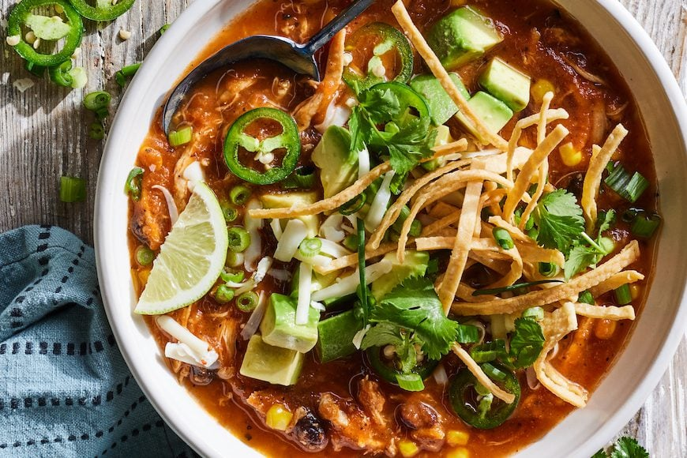

Chicken Tortilla Soup Recipe

Description
Chicken tortilla soup is a flavorful Mexican soup typically made with chicken broth, roasted tomatoes,
onions, garlic, and chiles, along with fried corn tortillas. It's a popular dish,
often garnished with avocado, cheese, sour cream, and cilantro.
Ingredients
- 1 tablespoon olive oil
- 1 medium onion, chopped
- 1 28-ounce can of crushed tomatoes
- 3 cloves of garlic, minced
- 1 10.5 oz can condensed chicken broth or stock
- 1.25 cups water
- 2 teaspoons chili powder
- 1 teaspoon dried oregano
- 1 can black beans, rinsed and drained
- 2 chicken breasts
- 1 cup whole corn kernels, cooked
- 1 can chopped green chile peppers
- chopped fresh cilantro
- 2 medium avocados
- 1/2 cup shredded cheddar cheese
Steps
- Gather all ingredients
- Heat oil in a stock pot over medium heat. Add onion and garlic;
saute until soft, about 5 minutes. Stir in chili powder and oregano
- Stir in crushed tomatoes, condensed broth, and water; bring to a boil.
Reduce heat and simmer for 5 to 10 minutes.
- Stir in black beans, cooked chicken, corn, hominy, chile peppers, and cilantro.
Simmer for 10 minutes
- Ladle soup into serving bowls and serve with avocado, lime, cheese, and chips.
Home